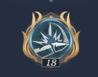

Clã: Water and Sun
Nível característica: 22
Pelos primeiros 10 segundos após o início da batalha, reduz o ataque do campeão inimigo da retaguarda em 20%. Este efeito não acumula

Clã: Nereide
Nível característica: 18
Cada ataque normal reduz o dano do inimigo em 8,5% durante 4 segundos. Acumula até 3 vezes